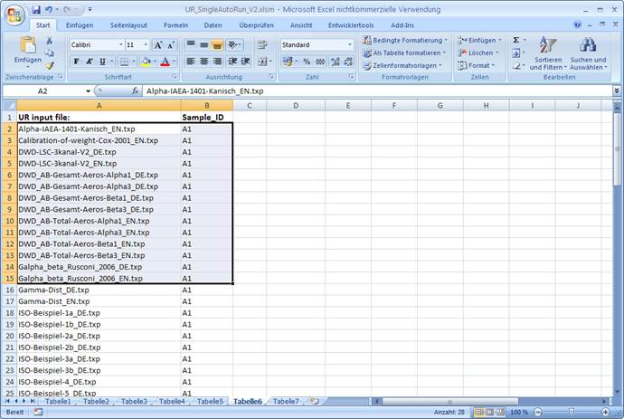
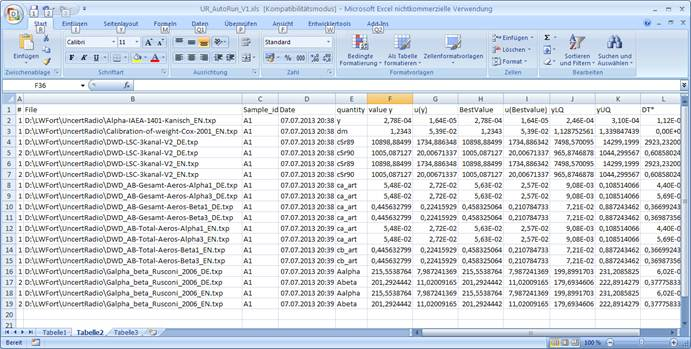

3.5. Beispiel einer Excelanwendung für den Batch-artigen Betrieb¶
Bemerkung
Plattform-Kompatibilität: Dieses Beispiel zum Excel-Batch-Modus ist nur unter Windows verfügbar. Es erfordert Microsoft Excel mit VBA-Unterstützung. LibreOffice Calc und andere Tabellenkalkulations-Anwendungen werden nicht unterstützt. Die Excel-Datei wird als Beispiel bereitgestellt, um die Möglichkeit der Batch-Verarbeitung zu demonstrieren, nicht als erforderliche Komponente für die Nutzung von UncertRadio.
In der darin enthaltenen Tabelle6 werden in Spalte A die Namen der automatisch zu bearbeitenden UR-Projektdateien und in Spalte B die Sample_ID’s zusammengestellt. In diesem Beispiel sind es alle UR-Projektdateien, die dem Programm beigegeben werden.

Bevor man mit dem Button Start Autorun_UncertRadio in Tabelle7 den Batchbetrieb startet, werden die gewünschten Dateinamen und Sample_IDs als zweispaltiger Block wie in obiger Abbildung gezeigt markiert, die ausgewertet werden sollen.
Nach Beendigung der Batch-Auswertung wird die von UR erzeugte Ausgabedatei AutoReport-Result.csv am Ende der VB-Routine in die Tabelle5 der Exceldatei eingelesen. Einen Ausschnitt daraus zeigt die folgende Abbildung.
